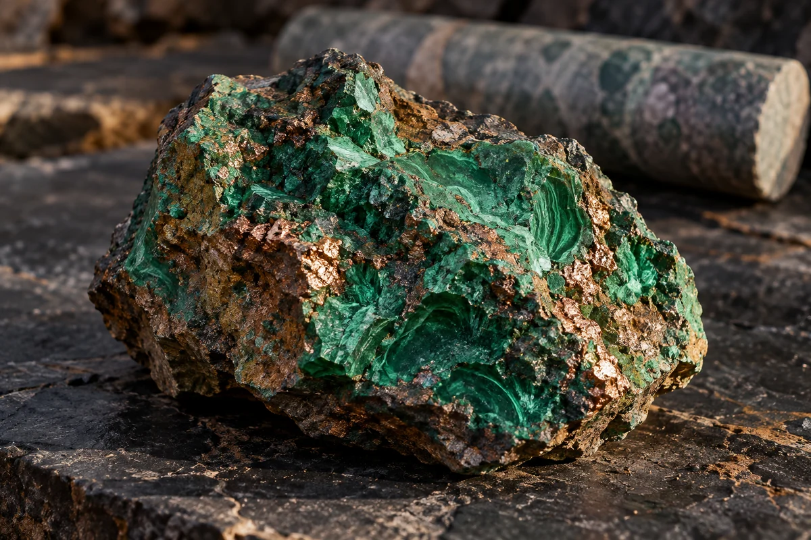
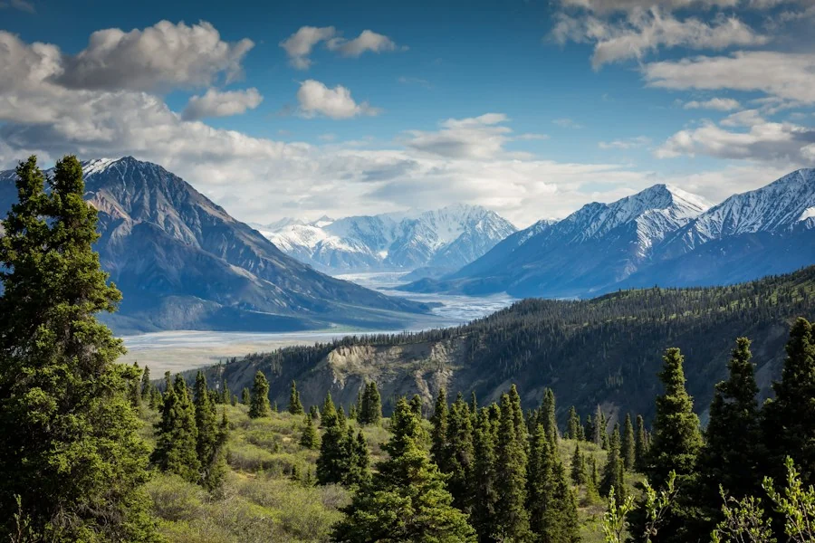
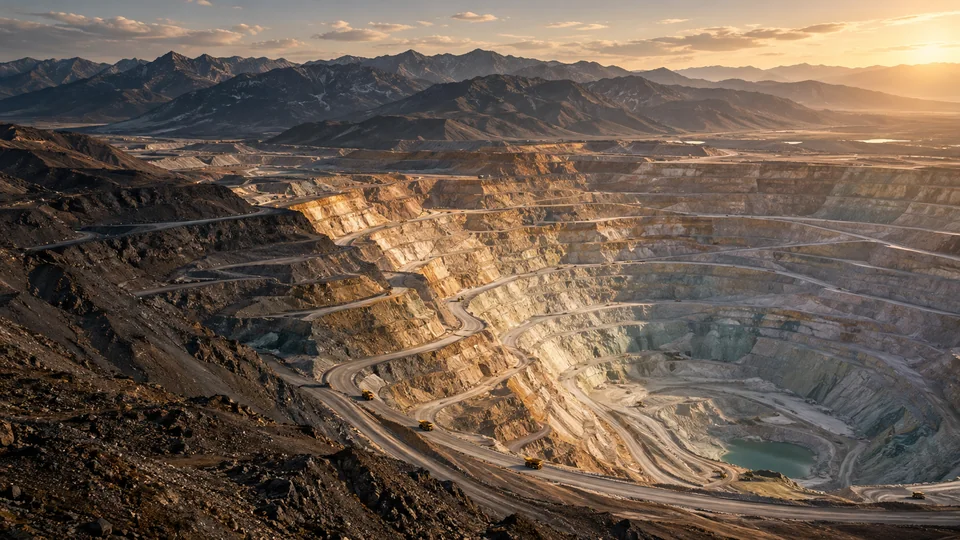

01
Comprendre le terrainExploration
géologique
Lire les paysages, cartographier les gisements et révéler le potentiel du sous-sol pour éclairer chaque décision.
Explorer ce métierLes ressources d’aujourd’hui. Le monde de demain.
Révéler le potentiel de la terre.
Créer de la valeur, avec exigence
et responsabilité.
Un regard sur la terre.
Une ambition pour demain.
domaines d’expertise
de vision du cycle minier
conviction : agir avec exigence

01 / Notre conviction
Les ressources sont au cœur du monde que nous construisons. Notre responsabilité commence là.
Chez Terra Mining, l’intelligence du terrain rencontre la vision du long terme. Nous imaginons une industrie où l’expertise technique, le respect des territoires et l’innovation avancent ensemble.
Découvrir ce qui nous animeAncrés dans la terre.
Tournés vers demain.
02 / Notre savoir-faire
Trois expertises complémentaires.
Une même exigence, à chaque étape
du cycle minier.
Lire les paysages, cartographier les gisements et révéler le potentiel du sous-sol pour éclairer chaque décision.
Explorer ce métierConcevoir l’extraction avec précision. Placer la sécurité des équipes et la maîtrise des impacts au premier plan.
Explorer ce métierAdapter les procédés à chaque minerai pour mieux valoriser les matières et utiliser les ressources avec discernement.
Explorer ce métier03 / Perspectives de terrain
De la première étude à la valorisation,
trois projets conceptuels pour donner
corps à notre approche.
3 projets affichés.

Exploration
ExploitationProjets imaginés pour illustrer notre savoir-faire. Une exploration des possibles.
04 / Notre responsabilité
Penser l’impact avant l’action. Intégrer les personnes, les milieux et l’après-mine dans chaque décision.
Partageons cette visionPrévention, formation et culture de la sécurité. Parce que la première richesse d’un projet, ce sont les personnes qui le portent.
SÉCURITÉ & ÉQUIPESPenser la gestion de l’eau, la réduction des impacts et la réhabilitation des sites dès les premières études.
ENVIRONNEMENT & APRÈS-MINEDialoguer avec les communautés et construire une vision qui tient compte des réalités et des aspirations locales.
DIALOGUE & TERRITOIRES05 / Le prochain chapitre
Une idée, une ambition, un nouveau terrain à explorer ? Imaginons la suite ensemble.
Terra Mining est une entreprise fictive de portfolio. Ce formulaire est une démonstration : aucun message n’est envoyé ni enregistré.